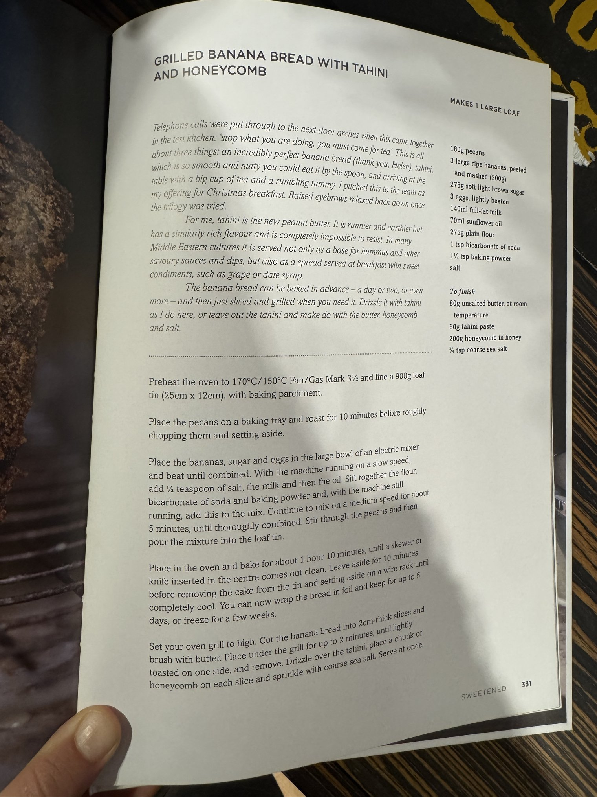

Banana bread a la plancha con tahini y miel
Ingredients
10×
- 180 g de pecanas
- 3 plátanos muy maduros
- 275 g de azúcar moreno
- 3 huevos
- 0.5 cdta de sal
- 140 ml de leche
- 70 ml de aceite de girasol
- 275 g de harina
- 1 cdta de bicarbonato
- 1.5 cdtas de levadura química
- 80 g de mantequilla
- 60 g de tahini
- miel en panal
- sal en escamas

Preparación
Paso 1
Tostar 180 g de pecanas 10min a 170ºC y picarlas.
Paso 2
Batir 3 plátanos muy maduros, 275 g de azúcar moreno y 3 huevos. Añadir 0.5 cdta de sal, 140 ml de leche y 70 ml de aceite de girasol, luego 275 g de harina, 1 cdta de bicarbonato y 1.5 cdtas de levadura química, y batir 5min. Añadir las pecanas.
Paso 3
Hornear en un molde de 25x12cm aprox. 1h10 a 170ºC y dejar enfriar.
Paso 4
Cortar rebanadas de 2cm, pintarlas con 80 g de mantequilla fundida y gratinarlas 2min. Servir con 60 g de tahini, miel en panal y sal en escamas.